武汉会战：一场史无前例的超级行动
原文链接 备份链接 伴随着火神山、雷神山医院开始收治病人，15家方舱医院陆续启动， 各省医疗队开赴武汉，武汉所有确诊患者与疑似病例都将“应收尽收”。 在人类抗击疫病的历史上，“武汉会战”已成为一场史无前例的超级行动 图/新华、中新 武汉 …

“我在窗台旁看了很长一会雪，特别想家，我们也在问什么时候结束。”
“病友们觉得床上有电热毯，冷的话躲在被窝里就行了。医护人员没什么地方可以躲，所以除了个别患者有畏寒的情况，就让医护人员优先用（取暖设备）。”
*“一个护士组长来月经了，她可能垫着尿不湿，全部打湿了，肯定是难受的，但再怎么的，作为一个组长，再崩溃也必须挺起来。”*
本文首发于南方人物周刊
文 | 本刊记者 张明萌 徐梅 杨楠
实习记者 曹彦 宫健子
梁翰文 刘睿睿 何沛芸
编辑 | 周建平 rwzkjpz@163.com
全文约5872字，细读大约需要14分钟

武汉国际会展中心方舱医院一病区一号房，受访者杨雪（红衣）与山西省医疗队和病友合影 图 / 受访者提供
两天前武汉的降温和雨雪天气，一度为武汉方舱医院带来挑战。
2020年2月14日，新一轮冷空气南下，湖北省气温骤降。当晚武汉狂风暴雨。15日中午，武汉市气象台发布暴雪黄色预警信号：预计15日中午到晚上，武汉市将有六毫米左右的降雪；同时发布道路结冰黄色预警信号：预计15日下午到16日上午，全市大部分地区将有可能出现对交通有影响的道路结冰。
据新华社15日消息，武汉多部门启动应急预案降低雨雪天气对抗疫的不利影响。武汉交警重点巡查医疗机构、方舱医院及集中隔离点周边道路状况，确保医疗救援通道畅通。
武汉首批方舱医院是在2月3日投入使用的。截至2月15日，武汉市已开放九个方舱医院，有6960多张床位，在院患者5606名。
为阻断大范围空气流动引发交叉感染，武汉方舱医院内一直停用中央空调。本刊记者采访了多位方舱医院的医护人员、患者与为方舱提供物资支援的志愿者，以及一线抗疫工作者的家属，了解极端天气下方舱医院的情况。以下为他们的口述。
患者实拍：武汉下雪方舱医院如何取暖 视频 / 梨视频
武展方舱患者陆俊奕：
十几天没有症状，核酸复测阳性率大概是50%
我在江汉方舱，也叫武展方舱。1月21日开始发热，因为试剂很紧张，一直到2月2日才做上核酸测试，3日拿到结果，6日凌晨住进方舱，算是这里的第一批患者。进方舱前我已经退烧，也不咳嗽，持续到现在。
医生让我再去做核酸复测，我复测是阳性。做一次采样，有两个核酸指标，我一个是阴性，一个是阳性。目前认为有一个阳性就100%是阳性，阴性的话可能有假阴性，所以我可以判断为阳性，还要等一周左右再复测。现在因为体内已明确是阳性，还有病毒残留，最少还要花几天时间，让体内的抗体免疫力把它清理干净。最少要连续两次“双阴”、两次测试间隔24小时以上，又因为要避免假阴性的问题，还要结合后期复测，包括复测CT及血象，综合各个情况都没问题才能出院，为了以防万一，出院患者要在家中自我隔离14天。
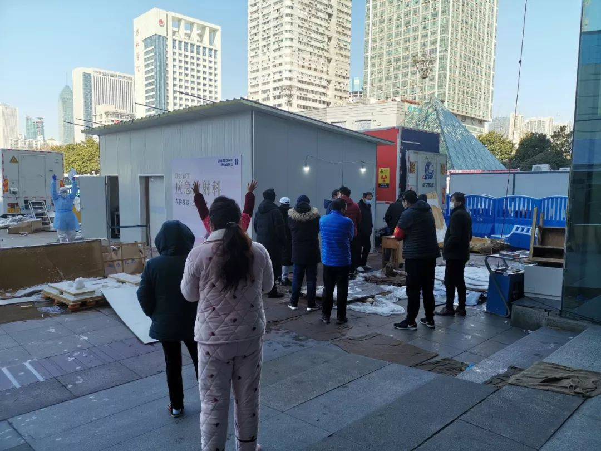
医生在教排队做CT的患者们做CT时候的姿势
图 / 陆俊奕提供
有一大批患者跟我一样十几二十天没有症状，复测阳性率大概是50%。也就是说像我们这样症状已经好转的人，哪怕过了十几二十天，体内还是多少有残余的病毒。为了对社会、自己和家人负责，最好还是各项指标都正常了，按严格的流程出院。
我们6日凌晨来的时候特别冷，这里为了保证通风，大门一般开着。当时海南的护士负责我们，他们也没有任何取暖措施，瑟瑟发抖，还没有靠椅，站了一晚上。后来我们反映了，大门虽然还是要开，但加装了六台柜机，开取暖模式，好像已经连着开了好几天。
14日晚开始降温，大门那儿的卷帘门放下来了，那是最普通的铝合金卷帘门。风确实太大，温度降得太猛。卷帘门放下后，15日又配备了一些风机和小太阳，数量有限，病友们觉得床上有电热毯，冷的话躲在被窝里就行了。医护人员没什么地方可以躲，他们来自五湖四海，有海南的、有内蒙的，内蒙那边习惯了冬天有暖气，海南完全都没经历过这种天气。所以除了个别患者有畏寒的情况，就让医护人员优先用（取暖设备）。
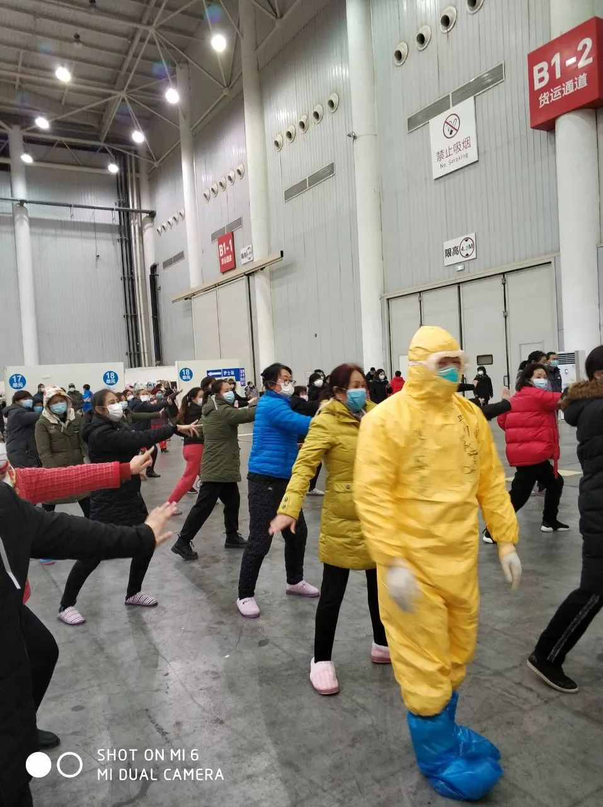
受访者李女士说，工作人员没有取暖器，病友们就把自己的给了他们。今天他们在防护服外面加了外套。李女士说，她看到的病友大多乐观 图 / 受访者提供
空调开到最大了，但因为空间太大，作用有限。装空调时，我们在床位附近活动都觉得没什么温度，有的患者怕冷，就躲在被窝里，或者在空调这边转。有的人一直活动，散步、打太极拳。武展方舱这边公共面积蛮小，不能像其他方舱大范围活动，病友们就找一些开阔地或在床边做一做（简单的运动）。

在医护人员的带动下，大家会每天不定时地跳广播操
图 / 受访者提供
我们没有停电，武展方舱是一个固定建筑，各项设置还不错。15日有一个病房有一条线路，可能什么电器功率大了，插座烧了，还好线路没烧，只是短暂停了一下电。之前没有停过电，只不过不能用大功率电器。有人本来准备自带一个烧水壶，巡查的民警劝止了。
我穿了一件棉袄，带了一件很长的羽绒服，可以当被子盖的，目前没有用上。之前有人收拾得太匆忙，洗漱用品、毛巾没带，这边都及时发了。药物在第一天下午就及时配发了，还统计了有其他慢性病要长期服药的患者，该发的都有发，供应都还好。
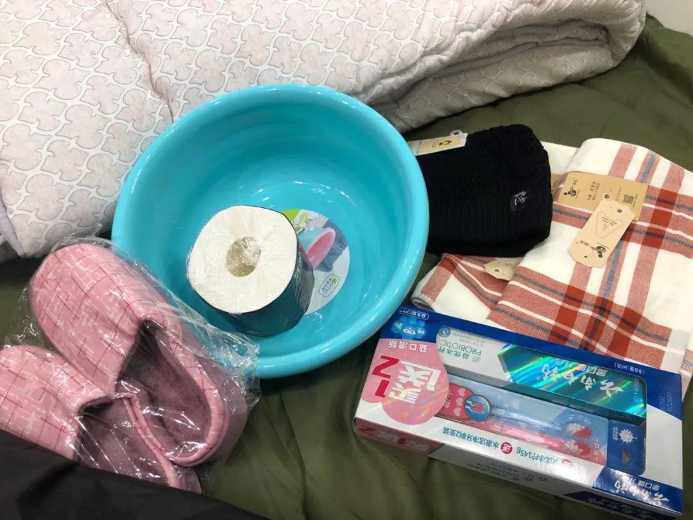
2020年2月12日，来到武汉体育中心方舱医院的第一天，患者明莉领到了洗漱用品、军大衣、保温杯等物品
图 / 受访者提供
原来没有洗浴间洗澡，16日晚从浙江运来一批锅炉。有电开水机，如果只是喝水的话基本不用排队。晚上高峰打开水排队要排很久，有人可能要做一些洗漱什么的，其他时候倒还好。因为电开水机本来也就是供饮用的，如果要打一大盆——甚至有人拿桶接，那肯定是刚烧好，你一打完他可能又要再烧一波。我没凑过热闹（排队），在这边没有打水洗头、拿水擦身子，每天早上抹下脸刷下牙，就当自己坐月子了。

武展方舱指挥部从浙江杭州采购4台电热锅炉
图 / 陆俊奕提供
中区有一个公共厕所，男厕这边有三个坑位，一开始有好几天一直不够用，排很长的队。后来运送来一批移动厕所，现在问题基本解决了。

武展方舱移动厕所外面的环卫人员 图 / 陆俊奕提供
我们没有因为天气受影响想回家，只不过想回家（的心情）总是有的。有的人像我就可能心态比较好，按流程来，该怎么样就怎么样。有的人可能特别急。这几天也会有人问为什么自己不能做核酸复测而着急，找工作人员吵，但还是少数人。
我也在做方舱的志愿者，我们有一个志愿者群，目前群里有112人。主要是配合护士发放一些物资还有饭菜。再一个是协助民警维护下这边的秩序。有时候有人吵架，就像居委会的工作人员一样去调解，能劝的劝。
早上六七点、中午12点左右、晚上6点左右，都可以及时吃饭，拿到手上都是温热的，饭菜是越来越好。16日中午吃的红烧肉、豇豆炒肉、干笋丝炒肉，还有青菜。早餐基本上就是面点，超市常见的速冻奶黄包、小馒头之类的为主。从入院后几天开始到现在，每天早上也会配牛奶、酸奶。水果一般是下午或晚上发。
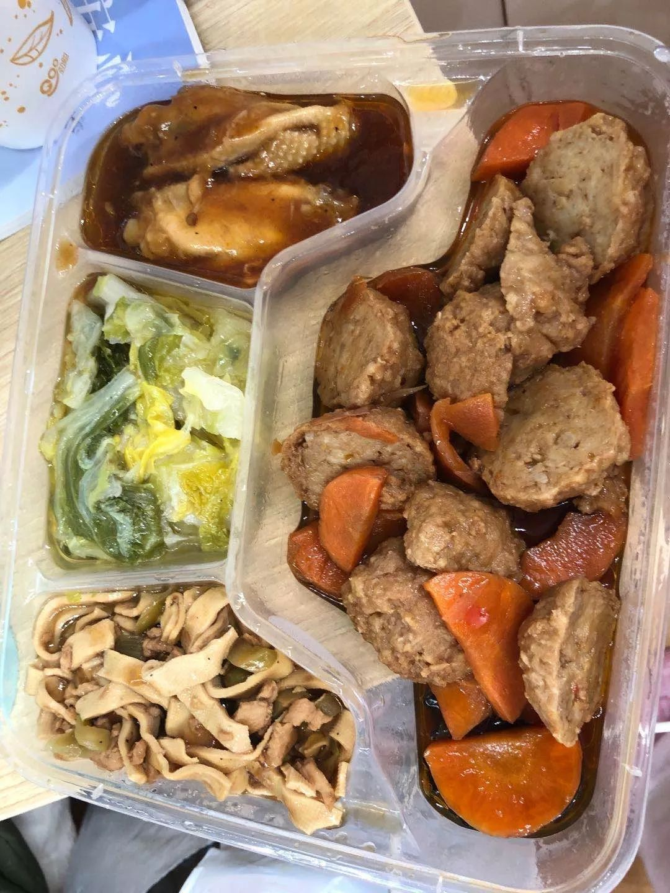
患者明莉的午餐有四道菜，荤素搭配，还有牛奶酸奶水果
图 / 受访者提供
不同病房床位不同，面积小一点的大概19 张床，多的话二十五六张床。床中间没有隔离板，保持一米左右的距离。一般两个病房算一个病区，不同病区之间有一个围墙，大概一米四五高。
医护人员是两点一线，如果是工作时间要休息，就坐在自己负责的病房门口，会有一个小办公桌、一个靠椅，他们要靠在椅子上休息。但是最近还了解到，护士们休息的时候必须低着头，保持下垂或者平着，因为后仰颈子部位会有缝隙露出来，增加感染的几率。有很多护士因为长时间低头，颈椎已经开始有点不舒服了。有的护士因为本来就容易有颈椎病等职业病，经常会发病，特别难受。
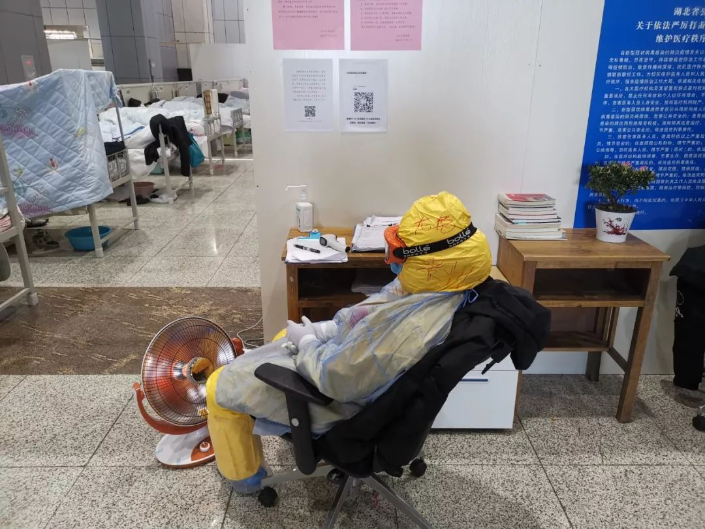
武展方舱内，医护人员必须垂着头休息，脚边是取暖器
图 / 陆俊奕提供
武展方舱患者杨雪：
情人节给每张床发巧克力
我是第一批进方舱的。刚来时每张床位上都有电热毯。变天时工作人员就把空调打开。但其实空间太高，空调作用不明显。15日运了一批小太阳取暖器，我们窝被子里，都给医护人员用了。
这边的生活，饮食这一块非常好，每天一日三餐有奶，早餐有鸡蛋、馒头、稀饭。三餐荤素搭配，四块四个菜，两荤两素，也有水果。医护人员总体来说蛮细心，但是流动性太大。因为从各个地方来，有山西的、海南的、贵州的，一个星期一换。16日我还跟护士聊，说为什么你们换得这么频繁。他们说因为每个区工作量不一样，比如16日可能到我们这里工作量比较大，17日就换一个工作量比较小的地方。
我们属于轻症患者，我是轻症当中的轻症，进来前的症状是拉肚子、浑身乏力。进来的第二天医生就没让我吃西药了，就吃他们方舱里特制的中药，因为我的各个症状都比较好，也没有拉肚子了。但是我一呆就是12天，其间没有做任何检查，核酸也好、血样也好、CT也好。我就不知道到底是好了还是没好。现在没有准确的答复，一些患者就很焦虑。
2月14日情人节，这边医护人员晚上给每张床发巧克力，加上一日三餐这些饮食生活上的细节，还是让我们觉得蛮感动的。

武汉国际会展中心方舱医院，2月14日情人节夜晚，医护送来巧克力 图 / 受访者杨雪提供
武展方舱护士刘月（化名）：
水瓶灌热水，鞋里塞纸尿裤，穿上羽绒服还是冷
我是护士，是贵州的护理团队。这次负责分管西厅所有患者的护理工作，最多的就是患者日常的生活安排、生命体征的监测、病情和心理动态的观察，发现患者心情不好了，及时给予健康宣教、心理疏导。
我们2月4日出发，晚上11点到了酒店。6日早上培训，晚上进舱。刚进舱时医护人员没有取暖设备，但配有羽绒服。患者每张床配电热毯。
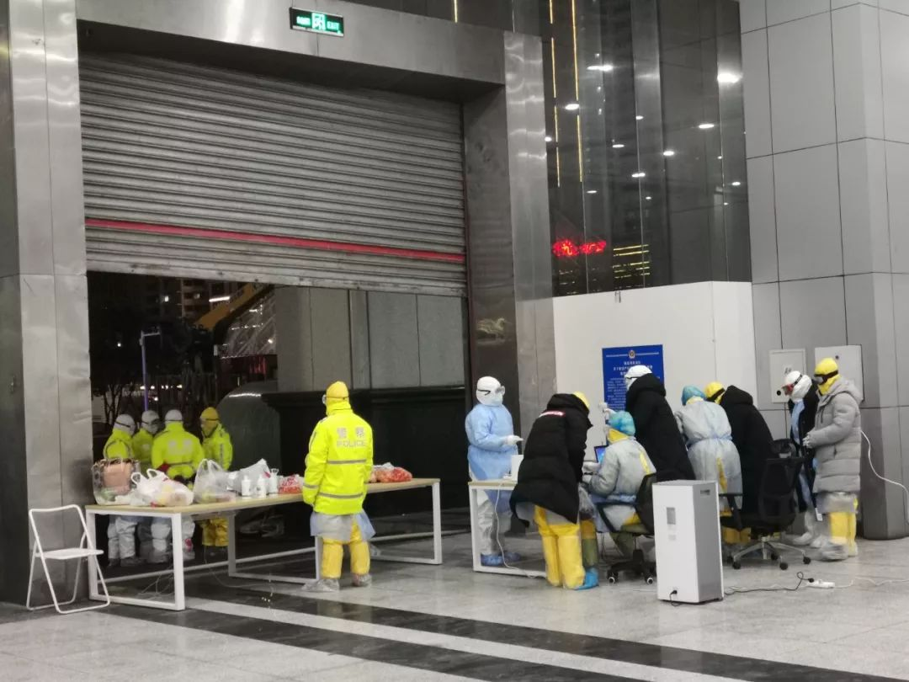
武展方舱西区的大门，也是患者入院的唯一大门，门口执勤的警察和医护 图 / 刘月提供
15日下雪了，患者看见我这里没有取暖机，给我提了一个小太阳过来，还给我找来插板、连上电源，挺感动的。
我们是每班六小时：早上8点到下午2点，2点到晚上8点，8点到凌晨2点，凌晨2点到早上8点。我15日是晚班，晚上8点到凌晨2点，16日是凌晨2点到次日早上8点。
夜班的话，下半夜肯定是最冷的，穿上衣服还是冷。但肯定比白班轻松，因为涉及的操作很少，患者都睡了。患者睡了我们也不能睡，我们就走一走、看一看。还有一些小办法，用那个水瓶灌一点热水，手拿着暖和一点。有的老师甚至穿雨鞋，穿进去之前先裹一层纸尿裤，说那样比较暖和一点。

三位护士与45房病患的合照，最右边是刘护士
图 / 刘月提供
（休息的时候我们）也可以坐、也可以站，就看自己情况，只坐着的话还是比较冷的。快下班（早上8点）的时候患者也起来活动了。他们在做操，我们有时候也跟着那些太极打得好的练一下，活动一下，稍微好（暖和）一点。
特别是下班后，我那个手啊，手戴着手套特别冰凉，脱掉了也是冰透骨了，15日回来我就感觉自己都有一点不舒服了，16日喝了一点药稍微好一点。到酒店可以洗热水澡。可能都增加了暖风机，相对来说还是比较人性化。
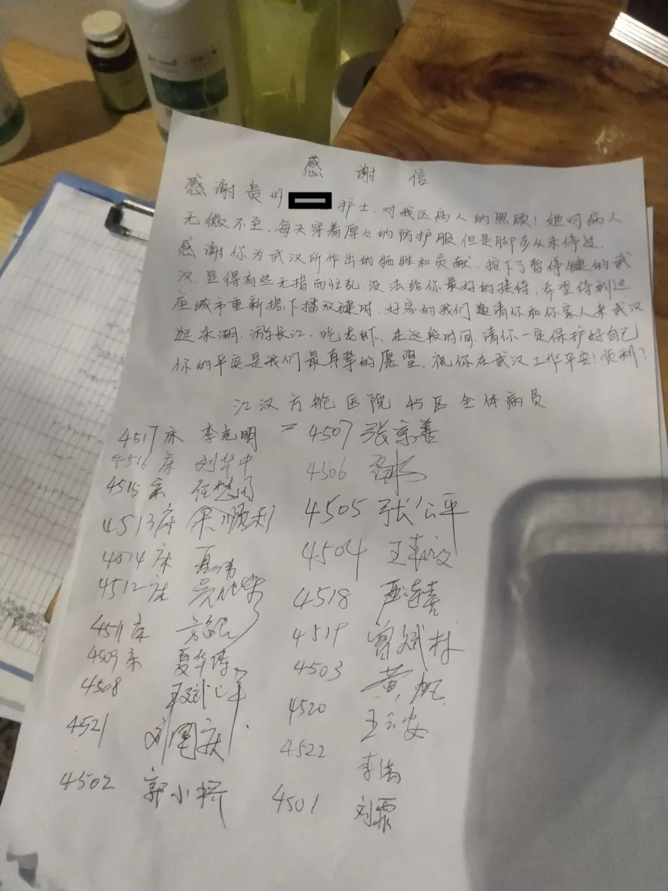
武展方舱45房病患写给贵州支援队的一位护士的感谢信——“你的平安是我们最真挚的愿望。” 图 / 刘月提供
14日的时候，一个护士组长说感觉已经来月经了，然后裤子也脏了，没办法，也没得换。但是第一天一般来的量不多，15日下班的时候，她可能垫着尿不湿，她说全部打湿了，尿液加上血，特别难受。肯定是难受的，但再怎么的，作为一个组长，再崩溃也必须挺起来。
我们刚进舱那几天没经验，常常因为发饭问题，有患者有意见。我们西区都是男患者，饭量肯定比女患者多，我们都是按量统计的，比如说我360张床位，我就拿360 份盒饭。患者戴着口罩，我们也熟悉得不那么快，有可能他领了以后觉得不够，又冒名来领，导致后面的饭就不够，后面的患者就生气。当然，我也能理解他们，毕竟不能让患者挨饿。民警就过来帮我们协调、安抚。

国博方舱医院四川医疗队员背上写着“我想吃麻辣烫”
图 / 受访者提供
有患者自主建了一个群，他们自愿来协助我们工作，大多数患者都非常好。我们组的很多小伙伴都收到了每个病房的感谢信，我觉得这个是很有意义的。在一些病房门口，患者还邀请我们一起拍合影。

刘月护士与三位患者的合照。戴红袖章的是一位“管家”志愿者，协助刘护士的工作 图 / 刘月提供
15日雨雪对我们影响也不大。我们南方来的很难得看见雪。15日那么大的雪，雪花不停地飘，其实堆积得也不是很厚，但我在窗台旁看了很长一会雪。各种心情都有，也有激动、也有思乡。我就在窗户旁坐着，在那傻呆呆地坐着看雪。想家，我觉得特别想家，但是也没办法。我们也在问什么时候结束。
武汉方舱医院发军大衣和厚被御寒 视频 / 我们视频
武展方舱医生张宁（化名）：
如果轻症患者因为担心，都不愿意来方舱隔离，才是恐怖的事
15日方舱里冷死了，我们医护冻得流鼻涕，没有取暖器。不过患者还好，可以偎在被子里。患者上厕所和洗澡比较困难一点，其他还好。
方舱条件是比较简单，这个主要是说医护工作环境不能跟平时正规医院相比，其实患者还好，轻症患者来这里隔离是非常必要的，患者所有的物资、药品都有保证，并且都是免费的。有好几个老街坊跟我打听情况，怕条件不好，来了受罪。如果轻症患者因为担心，都不愿意来方舱隔离，才是恐怖的事。
我们辛苦点没事。我们医生一个班六小时，需要提前一小时到岗，穿防护服做好准备，下班也是一样，按流程脱隔离衣，这样一个班前后得八小时。在班上事情做不完，一个医生要管将近50个患者。上班都穿尿不湿，不吃东西也不上厕所。下了班有盒饭。
2月15日武展方舱外雨雪交加，工作人员坚持执勤
视频 / 受访者陆俊奕提供
志愿者泡芙（化名）：
希望给方舱医院临时设个行政部门，让他们接收物资
降温之后，我们收到了一些医院的保暖物资需求，好几个医院都表示需要暖宝宝和御寒衣物。有医疗队去武汉时，只带了一件冲锋衣。我们综合这些信息，就发出了请求。16日我们打算统计具体数量，发现有点困难：我们没办法告诉医院我们有什么物资，他们也很难量化具体的需求数量。我们问一间方舱医院需要什么物资，他们只能告诉我们大概有多少人、需要什么东西，比如需要一些食物、一些保暖的衣物、一些女性用品，但是又说不出来具体数量。不过好消息是，另一个团队筹集到一批暖宝宝贴，已经在去武汉的路上了。
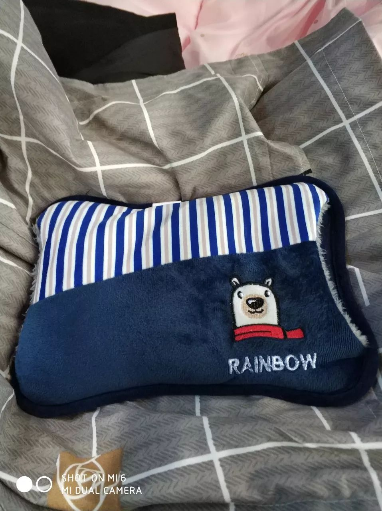
武汉国博方舱医院发放的暖宝宝 图 / 受访者提供
我们现在主要在进行非医疗物资的对接。前两天协助运送了一批苹果，我们最早联系同济医院的总院，他们表示光谷那边新开的科室需要，我们联系光谷院区时，他们说非常需要水果、牛奶这样的营养品。
这些天的工作后我们发现，这些营养品需求比较普遍，因为医护人员和患者需要补充营养。现在很多物资不太方便运过去，像那些蔬菜什么的，但运输就不太好解决。绿色通道只给医疗物资走，大众的捐赠，比如蔬菜这种只能雇车运到湖北这边。企业捐赠可以他们来承担运费。个人捐赠就比较困难，比如从深圳运到武汉，10吨蔬菜要8500元运费、4吨蔬菜要3500元。
我们会对接为方舱提供餐食的酒店，他们蔬菜种类不怎么缺，有的接到了捐助也没地方放。但是我们了解到，湖北其他城市比较需要生活用品和蔬菜水果，前几天我收到了孝感市第一人民医院的需求，求助表上有牙膏、牙刷、沐浴露、洗发水，各需500份。
现在还有一个问题是捐赠流程比较繁琐，方舱医院没有一个统一的接收单位，需要比较大的沟通成本。像我平时和医院沟通物资，同时联系五家医院，有一家是方舱，那其他四家很快都可以敲定，方舱不行。方舱医院人手相对没有那么充足，我们送货过去他们说，“都是女同志，没有人能够卸货。 ”也有人建议过，希望给方舱医院临时设个行政部门，让他们接收物资。
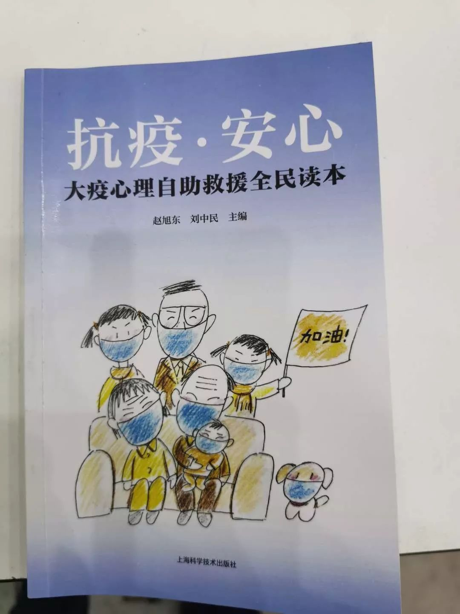
武汉客厅方舱发放的《抗疫·安心》读本 图 / 受访者提供
一线抗疫工作者的家属、武汉市民江程：
比起所有在外奔波工作着的人，我们已经很幸福了
14日晚说要降温，没想到幅度突然这么大。尽管门窗紧闭，呆在家里依然听到轰隆隆的惊雷。没错，就是惊天动地的那种雷声。接着狂风暴雨，透过窗户玻璃都能听到呼啸的尖锐风声和暴雨拍打的声音，空气中渗透着丝丝寒意。
在一线抗疫的先生因为工作原因在酒店隔离，非常时期空调也全部关闭不能使用。他说实在太冷，让我赶紧找找家里有没有取暖设备。在家各种找，终于找到一床被遗忘的电热毯。老公冒着狂风回家拿取暖设备，一脸沉重地说：这样少见的恶劣天气给武汉的抗疫增加了太多的难度，尤其是住在方舱里的患者和医护们，这样的寒冷他们该怎样渡过。
第二天一早醒来，窗外是漫天飞舞的雪花，远处的楼顶已经有了一层积雪。打开手机，微信朋友圈里好多树被连根拔起的图片，树枝横倒在马路上。这种一夜狂降十几度的恶劣天气，就算常调侃“一日三季”的武汉人也望而生畏，毕竟狂风暴雨过后下雪是真的少见。

16日武汉转晴，方舱外执勤的警察 图 / 陆俊奕提供
16日天晴了，蓝天白云，阳光明媚，如果不是马路上寂静得不正常，哪会感受到这个城市正遭受这样大的疫情。
我们家里有暖气、有热饭，比起所有在外奔波工作着的人，我们已经很幸福了。
（感谢郭琴在采访中提供帮助）
阻击NCP专题：


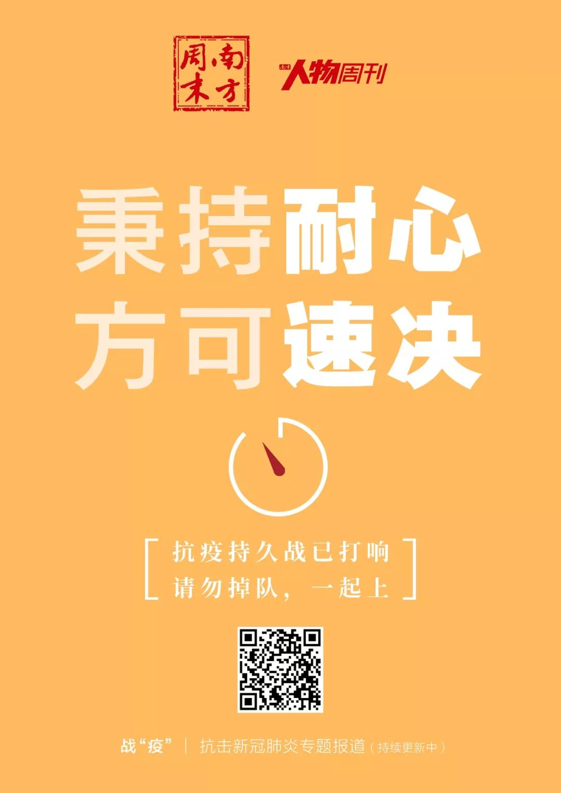
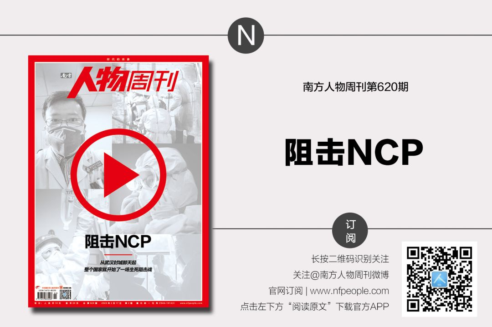

点击“阅读原文”即可订阅和购买最新杂志
原文链接 备份链接 伴随着火神山、雷神山医院开始收治病人，15家方舱医院陆续启动， 各省医疗队开赴武汉，武汉所有确诊患者与疑似病例都将“应收尽收”。 在人类抗击疫病的历史上，“武汉会战”已成为一场史无前例的超级行动 图/新华、中新 武汉 …
原文链接 备份链接 方舱的概念来源于军事领域。 不仅仅是患者，对很多医护人员来说，也是第一次接触。 2月5日晚，3家方舱医院启用，分别位于武汉洪山体育馆、武汉客厅、武汉国际会展中心，现在还有多家方舱医院正在修建。 这意味着万余名轻症患者可 …
原文链接 备份链接 澎湃新闻综合报道 新冠疫情发生以来，为了方便沟通交流，医护人员在背后写上名字，互相打气。 这些防护服上的字，如无声的誓词。 我们虽然看不见你们的脸庞，却从这些字里看到了希望。 “此行是为救治病人，不达目的不撤兵”——她 …
原文链接 备份链接 图片来源：同济大学附属东方医院 记者：刘素楠 编辑：徐菲 “ 大多数病人都比较稳定，多数患者只需药物治疗甚至可以不服药物。 ” 2月9日下午2点至次日凌晨，武汉客厅方舱医院B区来了百余位患者。他们一批批从大巴上下来，进 …
原文链接 备份链接 实习生 于洋 澎湃新闻记者 赵思维 2月5日晚，湖北武汉洪山体育馆改造的武昌方舱医院开始接收首批新冠肺炎轻症患者。至11日8时，武昌方舱医院先后投入120名医生、400名护士的医护力量，目前仍有437位轻症患者在接受治 …